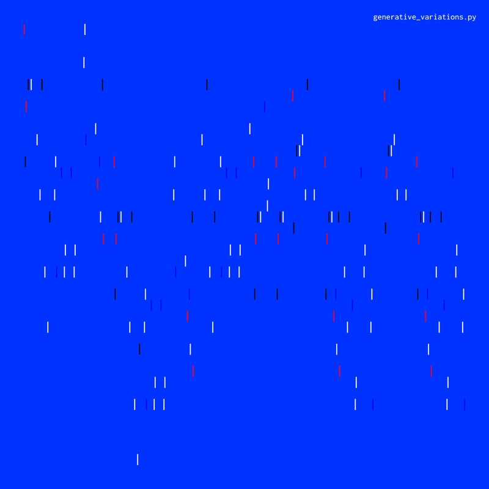
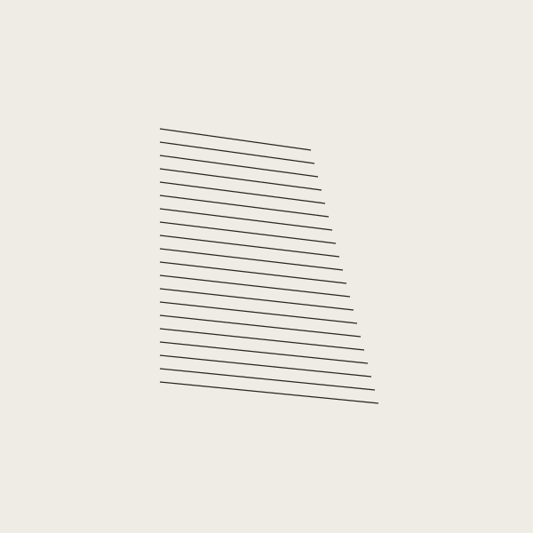
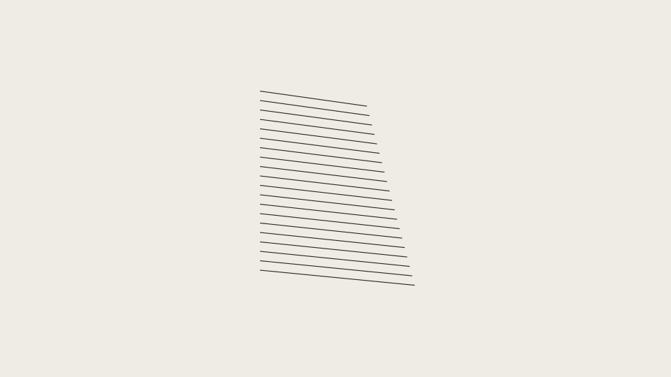
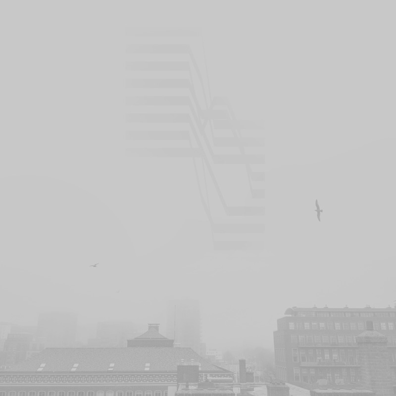
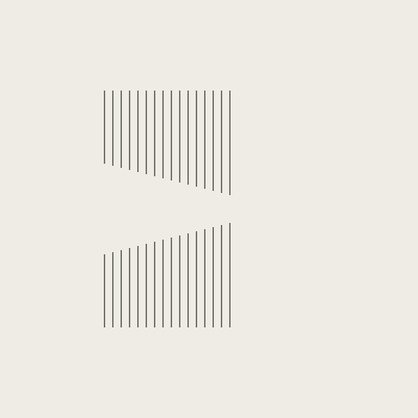
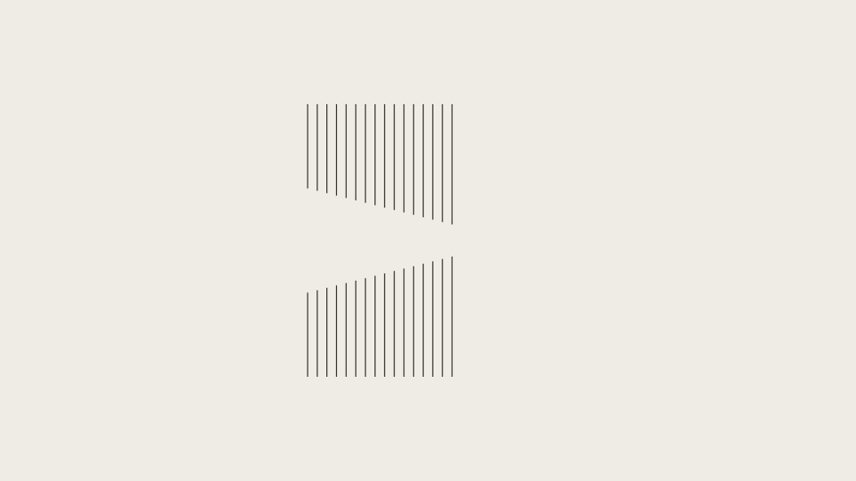
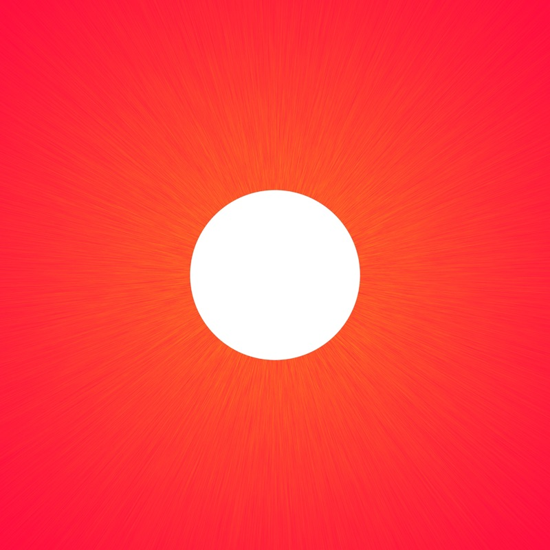
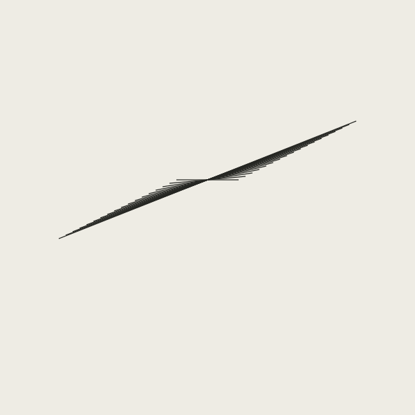
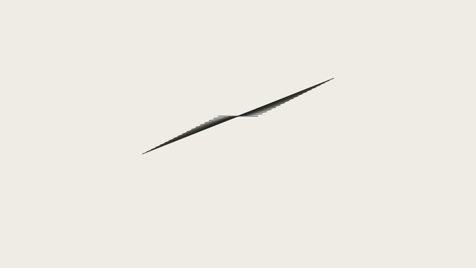

Design studies
7 November 2026. Review material outside the public site. The website uses the guide's recommended Cormorant Garamond and paper/carbon as its current implementation. Existing covers and original score pages remain the public imagery. These three line systems are experiments; none is a selected identity or replacement cover.
Display comparison
Cormorant Garamond Medium (current implementation)
generative_variations.py
Études voor cello
De Toekomst In
Alien Block (previous treatment)
generative_variations.py
Études voor cello
De Toekomst In
Primary text remains Space Grotesk. Carbon on paper is used for all small text; ash is reserved for structural rules. No extra accent is assigned to a genre or composition.
generative_variations.py
Twenty equal segments recur at a fixed interval; each endpoint shifts four units. A proposal about rule and variation, not a plot of the algorithm or audio.
count=20, step=15, shift=4; no randomness or seed.

Existing published artwork — retained

Experimental square · 600 × 600

Experimental landscape · 960 × 540Substructures
Two groups of sixteen vertical segments approach one another. The gap narrows by six units per pair, leaving the outer field empty. A proposal about underlying relationships.
count=16, step=12, shift=6; no randomness or seed.

Existing published artwork — retained

Experimental square · 600 × 600

Experimental landscape · 960 × 540As The Sun Rises
Eighteen open angles share a turning point; each arm grows by ten units and shifts five units. A proposal about development and open space, not cosmological illustration.
count=18, step=10, shift=5; no randomness or seed.

Existing published artwork — retained

Experimental square · 600 × 600

Experimental landscape · 960 × 540